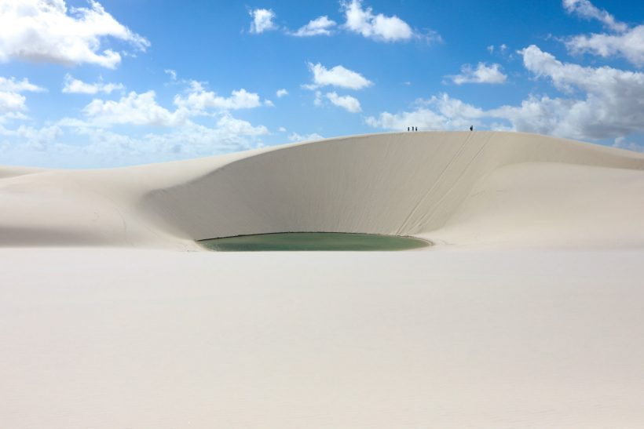
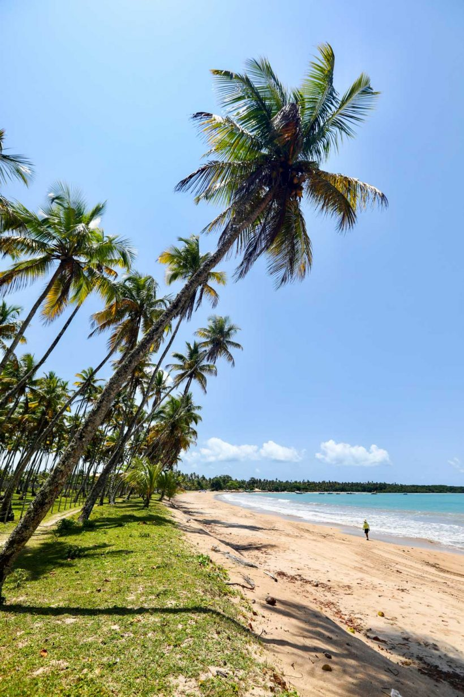
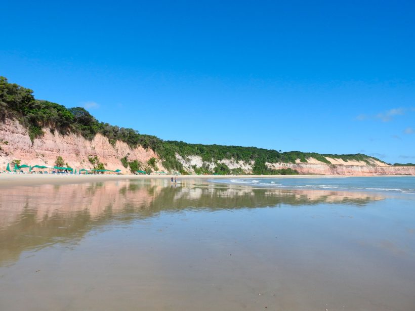

Top 5 praias mais bonitas!
Veja abaixo as praias com melhores vistas para se aproveitar.
1- Fernando de Noronha.
2- Lençois Maranhences.

3- Praia de Garapuá

4- Praia Brava
5- Praia da Baía dos Golfinhos
